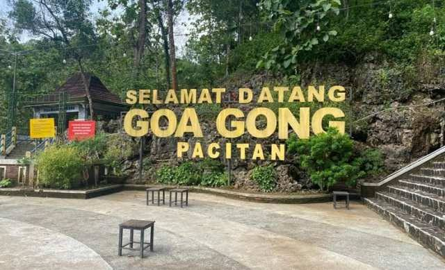
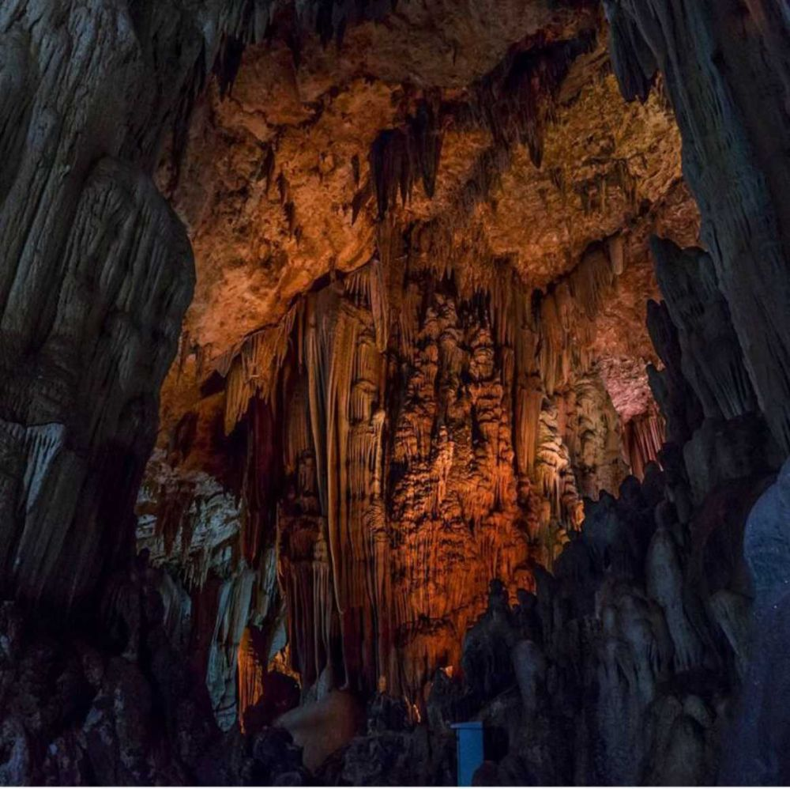
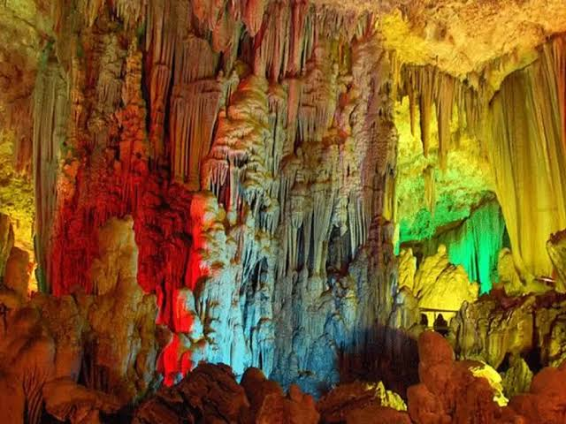
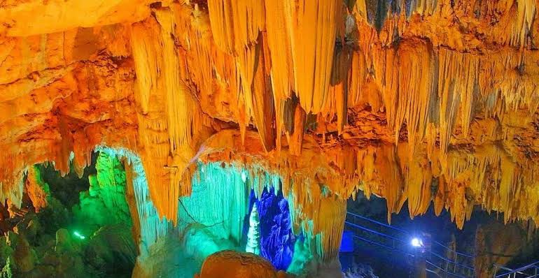
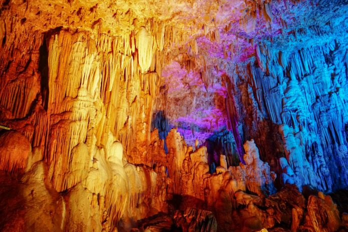

Gambar menunjukkan pintu masuk Goa Gong, dengan latar belakang bebatuan alam dan hiasan batu stalaktit yang khas.

Gambar memperlihatkan formasi stalaktit dan stalagmit indah di dalam Goa Gong, yang terbentuk secara alami selama ribuan tahun.

Gambar menampilkan ruang utama Goa Gong, di mana pengunjung dapat melihat pencahayaan yang menyoroti formasi batu yang menyerupai gong.

Gambar memperlihatkan pantulan cahaya di dinding goa yang memberikan efek visual menakjubkan pada bebatuan di dalam goa.

Gambar memperlihatkan keindahan interior Goa Gong dengan pencahayaan warna-warni yang menambah suasana magis di dalam goa.
Video singkat tempat-tempat Goa Gong